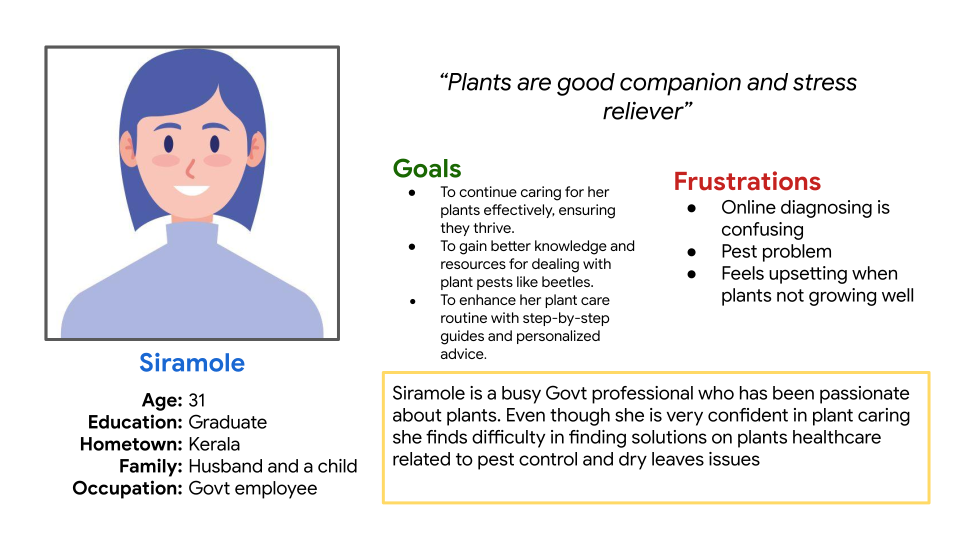

Tools & Technologies


UX Researcher | UI Designer
OverviewThis is a UX-focused case study for a mobile application aimed at helping users diagnose and care for their indoor plants. As part of the Google UX Design course, I followed a structured design thinking process to create an app that empathizes with the user and guides them toward better plant health — even without prior gardening knowledge. |
|
Problem StatementMany plant owners struggle to understand what’s wrong with their plants — yellowing leaves, wilting, or stunted growth. They either give up, over-care, or apply random fixes. The challenge was to design a digital solution that asks the right questions and offers friendly, personalized plant care guidance. |
|
My Roles and Responsibilities
|
| RESEARCH PROCESS | |
1. Empathize – Understand the UserI began by understanding the everyday struggles of plant owners. Through surveys and short interviews, I collected insights into how users interact with their plants, what challenges they face, and how they currently try to solve issues. Methods used:
Key findings:
|
|
2. Define – Identify Core ProblemsI synthesized our research into a clear problem statement and user needs. Problem Statement:
User Insight:
|

|
3. Ideate – Brainstorm SolutionsWith the problem clearly defined, I brainstormed multiple ideas for potential solutions. Ideas Explored:
The most feasible and impactful solution inferred:
|
To better understand how my idea fits into the user's day-to-day, I created a storyboard. 
|
4. Prototype – Build the ExperienceI developed user flows, a storyboard, and low- to high-fidelity wireframes to bring the idea to life. User Flow Chart: 
The user flow chart outlines the steps a user takes to interact with the system, from symptom input to receiving care suggestions. Prototype Features:
|
Persona: Siramole – represents our target user's mindset and behavior. |
5. Test – Get User FeedbackI conducted usability testing with some participants using the clickable Figma prototype. Feedback Highlights:
|
|
Conclusion & ReflectionsThe Plant Care Diagnosis project was an insightful journey through the Design Thinking process, from understanding user frustrations to designing a practical, empathetic solution. By combining research, empathy, and iterative design, I was able to craft a prototype that supports users in identifying and caring for their struggling plants with ease and confidence. This project helped me understand the value of:
|